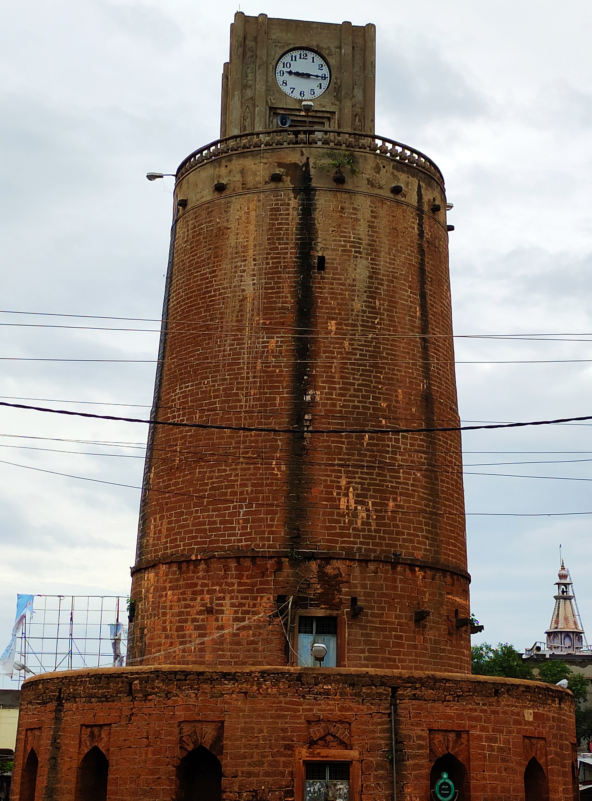

About Chaubara
Chaubara, also known as Choubara, is a historic watchtower located in the heart of Bidar, Karnataka. It is one of the important landmarks associated with the Bahmani period.
The tower is known for its cylindrical shape, impressive height and elevated position, which provides a wide view of the surrounding Bidar plateau.
History
Chaubara dates back to the Bahmani period. It is believed to have been built during the reign of Ahmad Shah along with other fortifications of Bidar.
The watchtower was likely used to observe the surrounding region. During the British period, a police station was constructed beside the tower, which was later removed following archaeological recommendations.
Architecture
Chaubara is a cylindrical tower built using black trap masonry and lime. It is approximately 71 feet high and becomes narrower towards the top.
The tower has a circular base with arched niches and an entrance on the eastern side. A winding staircase with around eighty steps leads to the top of the tower.
Chaubara Gallery
Explore the historic Chaubara watchtower of Bidar.

📍 Location
Chaubara, Bidar, Karnataka, India
🗺️ View on Google Maps